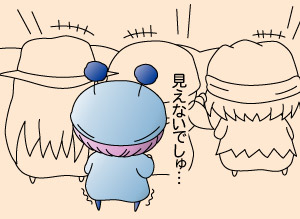

2004年7月2日（金） 18:30～
池袋のHMVというCD屋さんにて行われた、Sanaさんの歌うミルモED曲『僕のトナリ』のCD発売記念イベントに参加してきました。なお、一週間前は大阪で、池袋の翌日は秋葉原でも行われるというハードスケジュールのようですね。
会場はCD売り場のど真ん中で行われたので、CDを買わなくてもSanaさんを拝めることは出来るのですが、握手会参加券とSanaさん生写真ゲットの目的で私はHMVでもCDを買いました（すでに通販で購入済みでしたが^^;）。通販ではもらえなかったSanaさんポスターがもらえたので、結果オーライです。
今回のお客さんは全部で60人くらいだったかな。私はお店に一時間前に到着し参加券をゲットしましたが、40番台後半…(^◇^;)。私より若い番号の皆さんはいったい何時間前に来たのでしょうね…。
開場30分前に集合の指示に従ったら、風通しが悪く蒸し暑いお店の隅っこ（お店の外）に並ぶハメに。。その間、店内ではリハーサルやプロモーションビデオのテスト再生が行われていたのですが、一番見たい私たちが見れないという仕打ちが(汗)。待ち時間の間に、イベントにて使われるSanaさんへの質問票を記入しました。
機材の調整などで開場の時刻が少し遅れましたが、無事にイベントはスタート！ 拍手でSanaさんを迎えるのですが、Sanaさんはホント美人ですね。Sanaさんのその美しさに男女問わず多くの人が見とれていましたよ。会場では一番後ろになってしまった私は、背伸びばかりしていましたけど。。
一曲目はCDにも2曲目に収録されている『君がいなくちゃ』。力強さが感じられるSanaさんの歌声で会場は一気にヒートアップ、その状態でSanaさんへの質問コーナーへと続きます（待ち時間に書いた質問票がここで使われます）。
Sanaさんが抽選箱から引いた質問票が読み上げられるのですが、質問の多くがSanaさんファンじゃないと分からないディープな(?)質問ばかり…私のようなミルモ中毒は非常に少なかったものと思われます(^^;。最後の３名はSanaさんと一緒に写真が撮れるという特典がありました。結局私の質問は読まれませんでしたが、とても盛り上がったトークショーだったと思います（私の質問は「お酒を飲むとどう変わりますか？」でしたが、こんな質問が採用されなくてよかったですね(汗)）。
二曲目は、以前発売のアルバムの中から一曲（すいませんタイトル忘れました～^^;）。なお後で調べて知りましたが、Sanaさん（新谷さなえさん）はコナミの"pop'n music"や"ビートマニア"でいくつかの曲を提供していたのですね。『Miracle Moon』や『サナ・モレッテ・ネ・エンテ』など、以前音ゲーを楽しんでいた私にとっても馴染み深い曲がSanaさんの歌と分かり感激しています(^^)。
最後の『僕のトナリ』の前に、曲の説明がありました。いつも近くから自分を励ましてくれる人のためにもがんばらなくちゃと思う気持ちが込められているとのことです。またタイアップの説明もあり、ミルモでポン！わんだほうのお話もここでありました。Sanaさんは「ミルモがこっくりこっくりと眠る姿がかわいい」と言っていましたが、よくわかっていらっしゃる！(^^)
最後の『僕のトナリ』を歌い上げた後、店内全体が癒されていたような気がします。握手会で「これからもがんばってください！！」（月並みなセリフだなぁ）とSanaさんに伝え、イベントは終了です。
(2004/7/5)